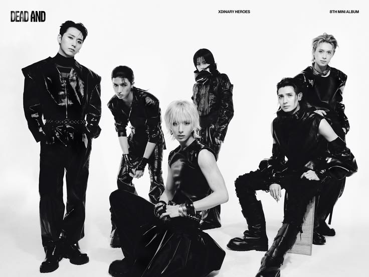
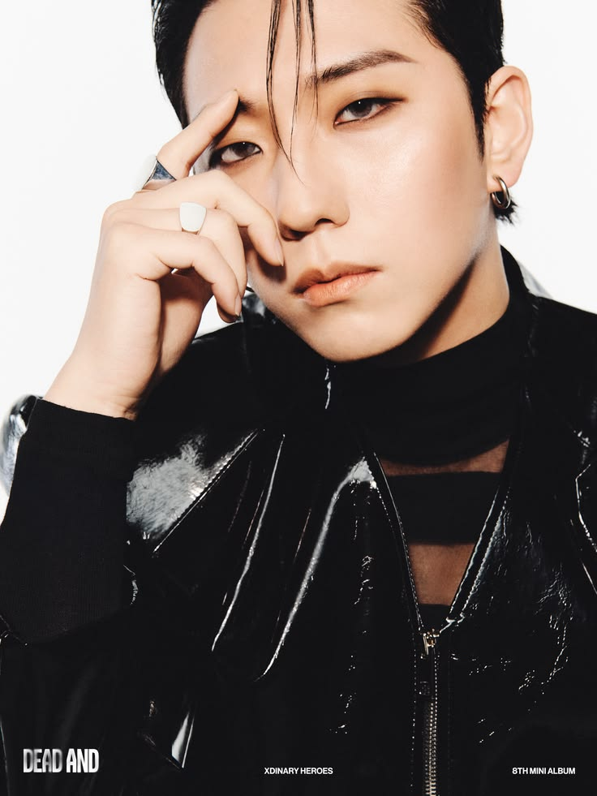
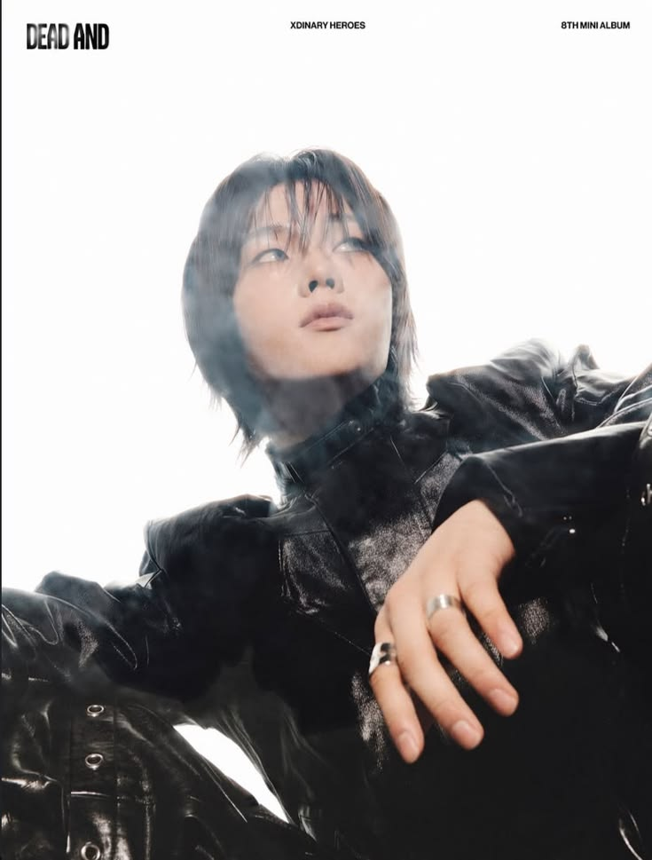
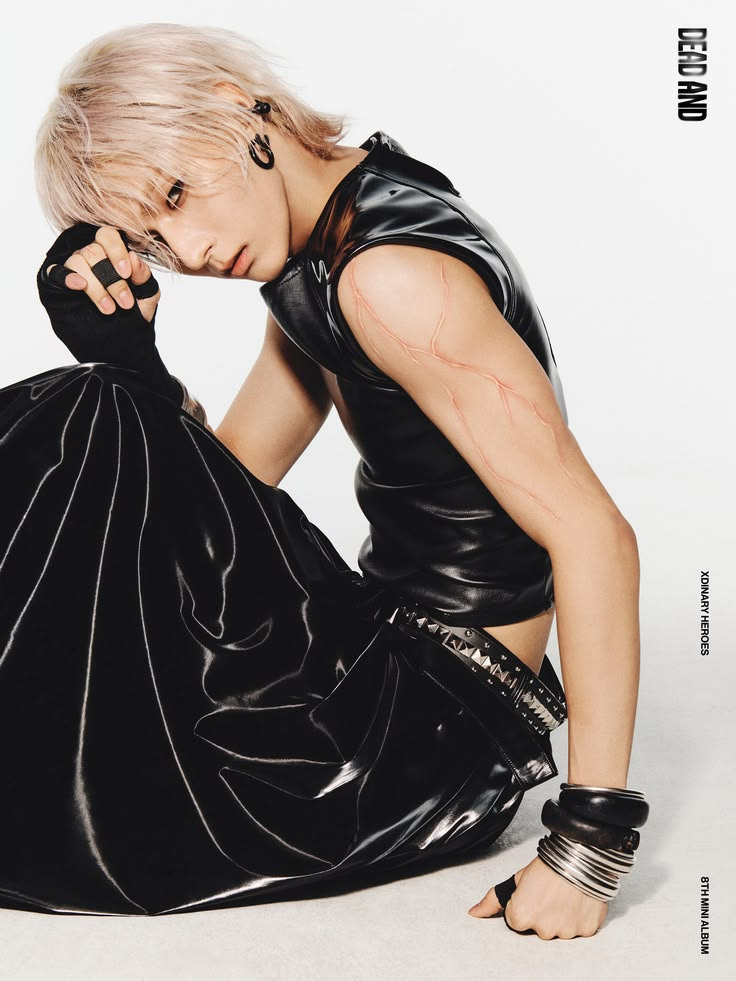
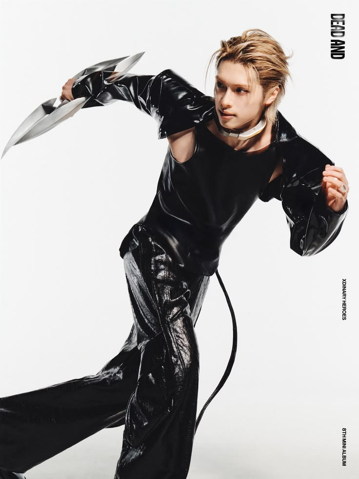
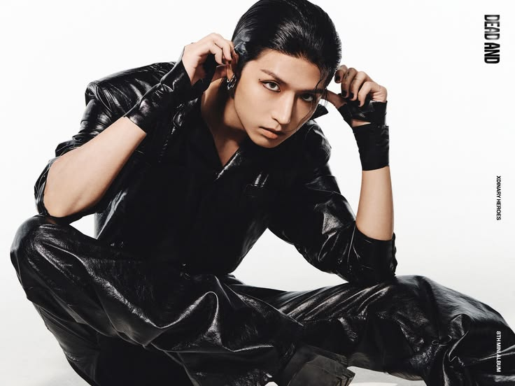
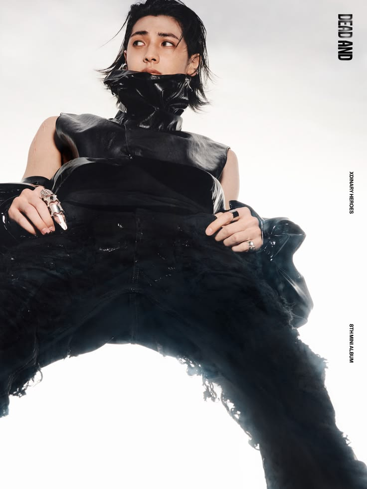

| Inicio | Acerca De | Discografia | Media |
Xdinary Heroes
Xdinary Heroes es una banda de rock surcoreana formada por seis integrantes. Se caracteriza por combinar rock, pop y sonidos modernos con mucha energía, letras emotivas y presentaciones llenas de fuerza. Su estilo destaca por el uso de instrumentos en vivo y una imagen juvenil y rebelde.

Integrantes

Gun-il (Batería / Líder)

Jungsu (Vocalista principal / Teclado)

O.de (Teclado / Rap)

Gaon (Guitarra / Rap)

Jun Han (Guitarra)

Jooyeon (Bajo / Maknae / Vocalista Principal)